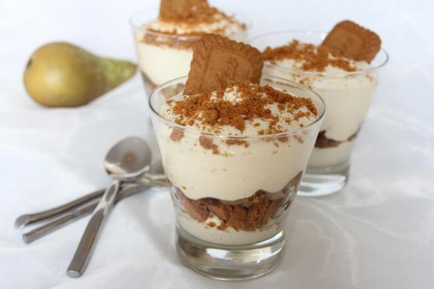

Recette tiramisu poires spéculoos
Comme c'est bientôt l’automne, je vous propose la recette d'un tiramisu parfumé aux poires et aux spéculoos. J’espère que ces saveurs vous plairont, autant qu’elles m’ont plu !
Ingrédients (pour ~10 verrines)
- 1 grosse boîte de poires au sirop
- Spéculoos (moins d'un paquet)
- 250g de Mascarpone
- 3 oeufs
- 100g de sucre
- 1 sachet de sucre vanillé
Préparation
Étape 1 : les poires
- Mettre de côté le sirop des poires.
- Couper les poires en petits dés.
Étape 2 : la crème
- Casser les oeufs en séparant les blancs des jaunes.
- Monter les blancs en neige en y ajoutant un peu de sel et les mettre de côté.
- Battre les jaunes d'oeufs puis y ajouter le sucre et le sucre vanillé.
- Bien mélanger puis incorporer le mascarpone et mélanger.
- Enfin, ajouter les blancs montés en neige et mélanger jusqu'à ce que la crème soit lisse et homogène.
Étape 3 : le montage
- Tremper un spéculoos découpé à la taille de la verrine dans le sirop puis le placer au fond.
- Recouvrir de crème (environ 2 cm).
- Disposer une couche de morceaux de poires sur la crème.
- Remettre un spéculoos trempé dans le sirop, puis une couche de crème puis une couche de poires.
- Emietter un spéculoos sur le dessus pour faire joli !
Bon appétit !
Thomas.